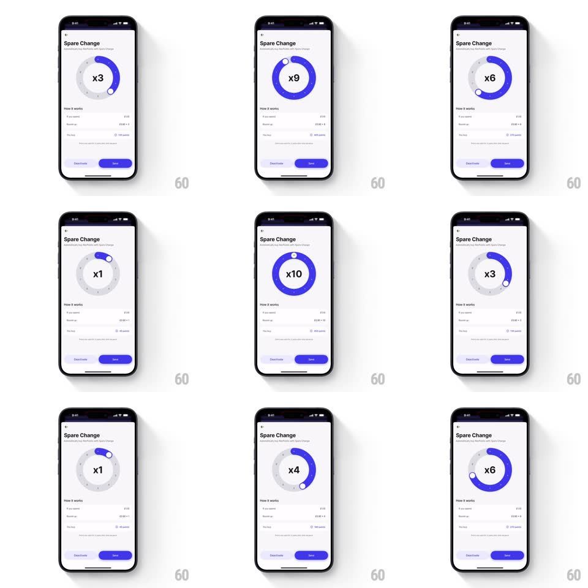

Media
Frame-by-frame

Rebuild this interaction 1:1: Revolut's Spare Change circular slider - dragging the dot handle around the ring selects a spare-change multiplier (x1-x10), the center number scales with a spring on each step, and the ring fills purple in proportion to the value.

Rebuild this interaction 1:1: Revolut's Spare Change circular slider - dragging the dot handle around the ring selects a spare-change multiplier (x1-x10), the center number scales with a spring on each step, and the ring fills purple in proportion to the value. ## Integration Integration: stack-agnostic spec - springs given as stiffness/damping, timed motions as duration + curve; map every value to your framework and animation library of choice. ## Scene Light "Spare Change" screen: back chevron and title, a large circular slider with tick marks and a draggable dot handle on the ring, the current multiplier (x1, x2 ... x10) big in the center, a "How it works" section with example rows below, and bottom "Deactivate" (ghost) and "Save" buttons - Save fills solid purple once a value is chosen. ## Motion spec Pattern: circular scrubber with stepped spring feedback, gesture-driven. - Drag: the handle tracks the finger's angle 1:1 around the ring; the purple fill arc sweeps with it (value/10 of the circle). - Step: crossing each tick snaps the value (haptic), and the center number pops (scale 1 -> 1.25 -> 1, spring ~450/16, 250ms) to the new multiplier. - Full: at x10 the ring is a complete purple circle; the center label gets a full-state emphasis (extra 1.1 scale pulse). - Save: the Save button fills purple (200ms) as soon as the value differs from the saved one. - Release: the handle eases onto the exact tick angle (spring ~320/22). ## Calibration - Values are integers 1-10, always snapping - no free angles between ticks. - The number pop fires on step change, not continuously during drag. ## Reduced motion Handle jumps to ticks without pop; fill arc updates instantly. ## Don't miss - The center number is the feedback hero - it must visibly bounce on each step. - Save only activates on change; the initial state shows it disabled.